Virtual Humans & Cinematics
ASSIGNMENT 2
Ascesa, declino e rinascita di un Metahuman
La reference: Expedition 33
Obiettivo: ricreare la scena del litigio tra Gustave e Lune.
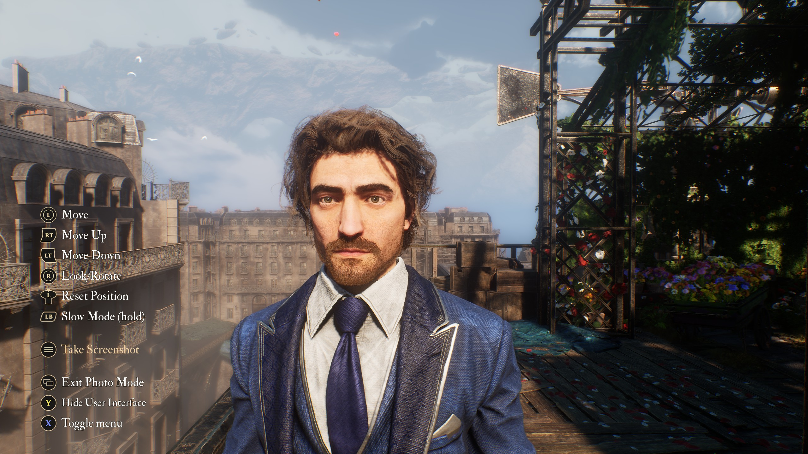
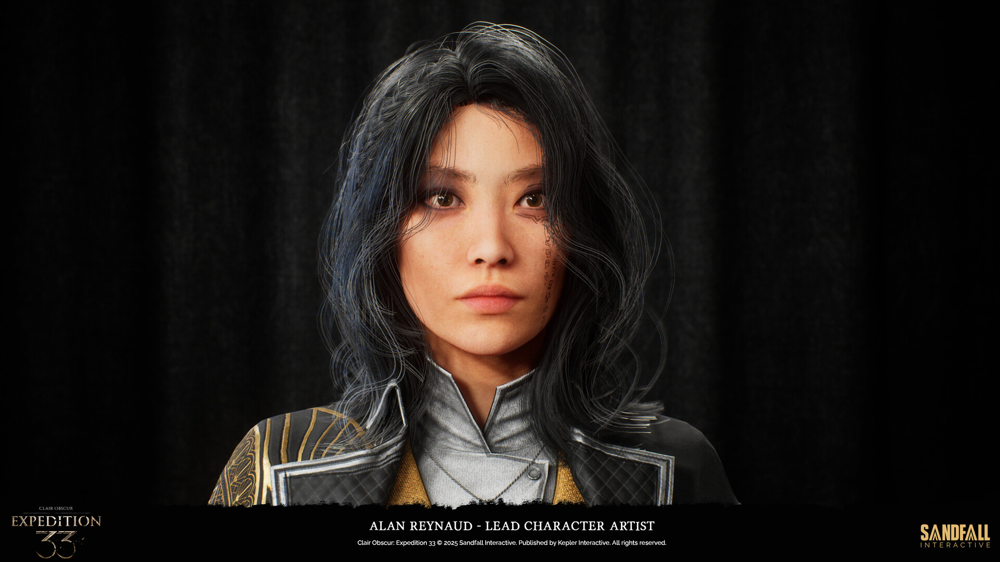
Tentativo 1 — MetaHuman Editor diretto
Partire dalle mesh base di MH e “copiare” il volto a occhio.
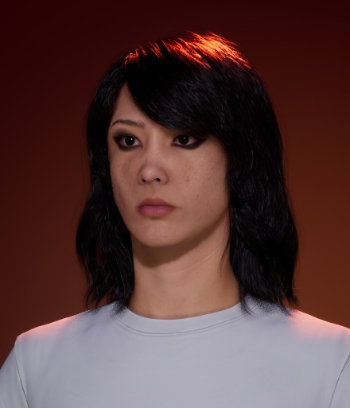
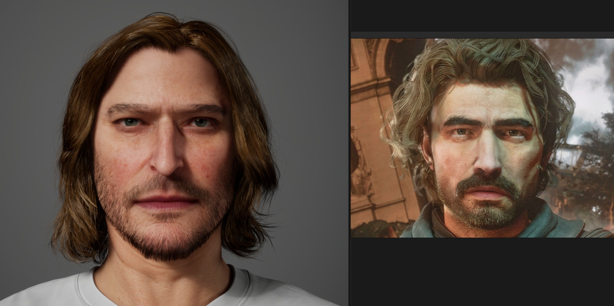
Problemi riscontrati:
- Personalizzazione limitata
- Effetto uncanny valley: modificata una parte, il resto non torna più
- Impossibile ottenere una somiglianza credibile
Tentativo 2 — FaceBuilder su Blender
Workflow: scan reference → MH Identity → import in Unreal
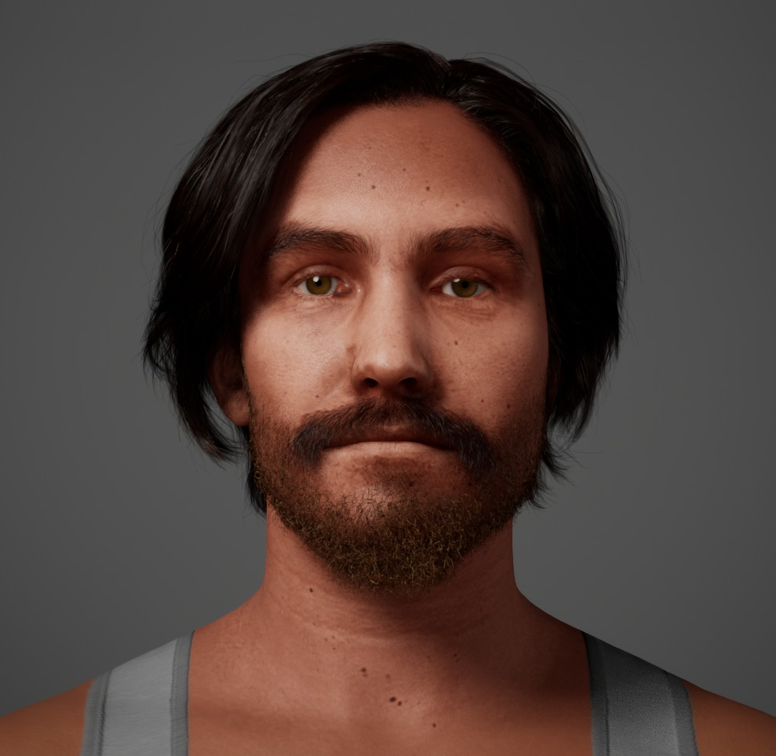
Workflow FaceBuilder
Soluzione - Metahuman di Dario e Federico
Si porta il concetto di “post mortem” all’estremo: abbiamo realizzato i nostri metahuman per farli discutere sul precedente fallimento.
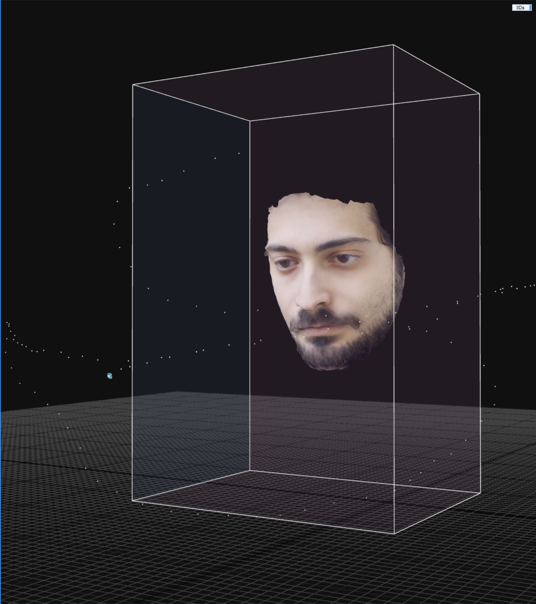
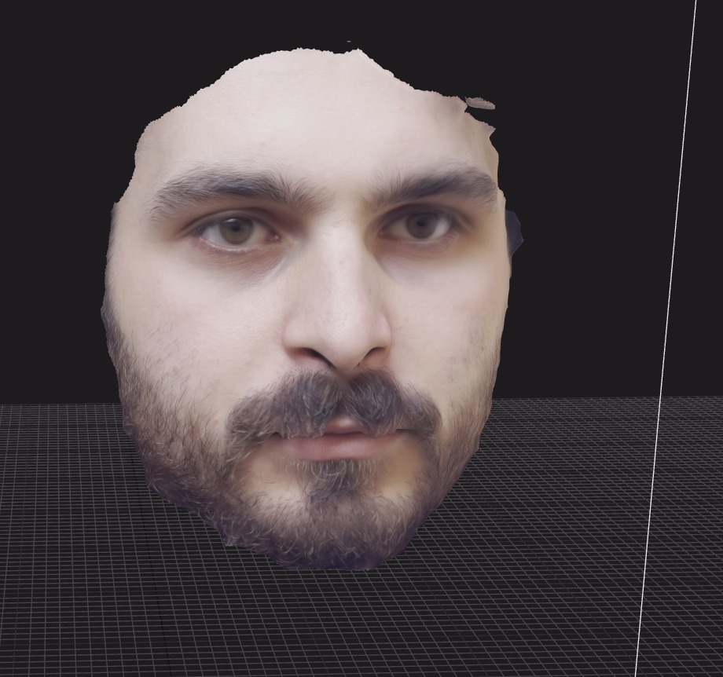
Soluzione - Metahuman di Dario e Federico
Si porta il concetto di “post mortem” all’estremo: abbiamo realizzato i nostri metahuman per farli discutere sul precedente fallimento.
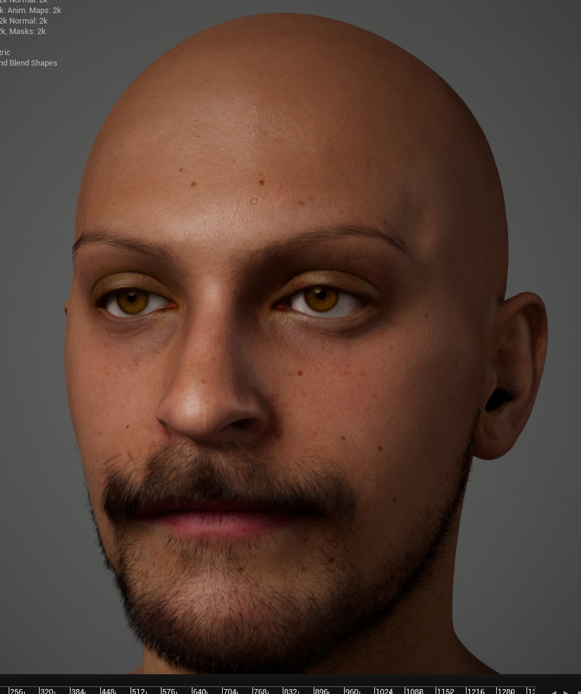
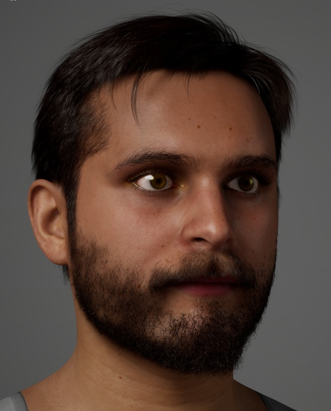
Character Creation Workflow
Video selfie rotante → Reality Scan → Scan pulito → MH Identity → MetaHuman base → Vestiti + capelliFederico
- Capelli importati da asset esterni
- Clothes importati e fittati
Dario
- Barba e baffi da libreria MH
- Clothes importati e fittati
Capelli su Blender — e perché l’abbiamo abbandonato
Tentativo: Blender → Alembic → Groom Asset in Unreal
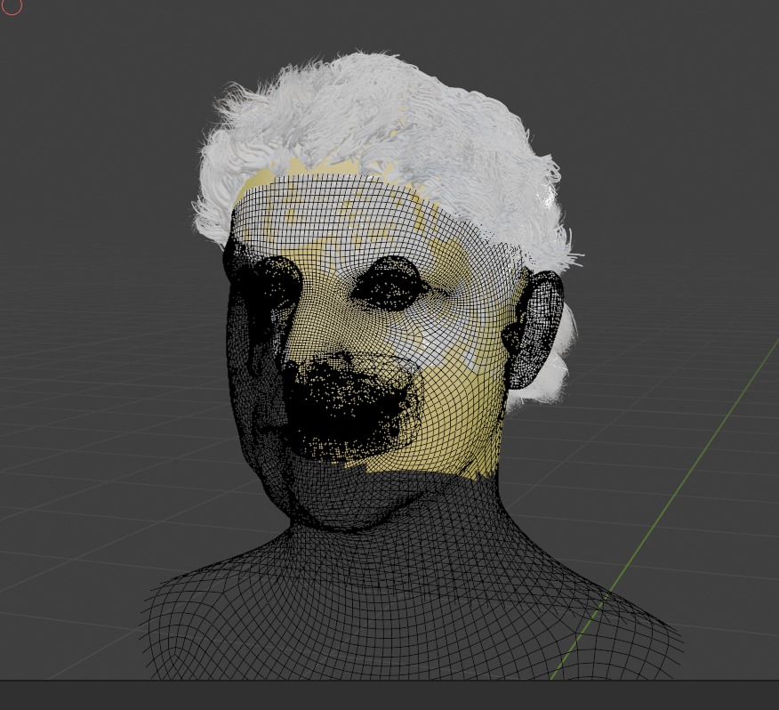
Il lavoro su Blender era venuto bene…

…ma l’import in Unreal era un incubo.
Lessons Learned — Post-Mortem
Cosa ha funzionato ✅
- Mesh to MetaHuman: somiglianza fotorealistica rapida.
- Cartwheel: workflow mocap pulito ed efficace.
- Live Link Face: espressività superiore (depth data).
- Pivot creativo: trasformare il fallimento in narrazione.
Criticità e Problemi ❌
- Uncanny Valley: l’editing manuale a occhio non regge il confronto.
- Blender Groom Asset: pipeline Alembic instabile in Unreal.
ASSIGNMENT 3
Realizzazione di una cutscene
L’idea: la Gag
Ispirazione: la lezione del professore sul Post Mortem.
E se mettessimo noi stessi in scena, a discutere del MetaHuman venuto male?
Concept: Fede e Dario attorno a un tavolo operatorio, con Gustave-patient-zero sdraiato.
Zenitale sul tavolo, push in sul metahuman sdraiato.
Dario: "Ma come ti è venuto in mente di partire da Blender
per poi passare su Unreal e pensare che venisse una cosa decente?"
Fede: "Vabè almeno ci ho provato, non è che possiamo fare
le cose giuste al primo tentativo"
Dario: "Ho capito ma ti rendi conto di quello che ho dovuto fare
per farlo sembrare un minimo accettabile?"
Fede: "Eh sì che lo vedo, guarda quel naso lì, e poi manco hai
cambiato il preset di base di metahuman"
Dario: "Magari con una mesh decente di partenza avrei avuto
anche più voglia di farlo giusto"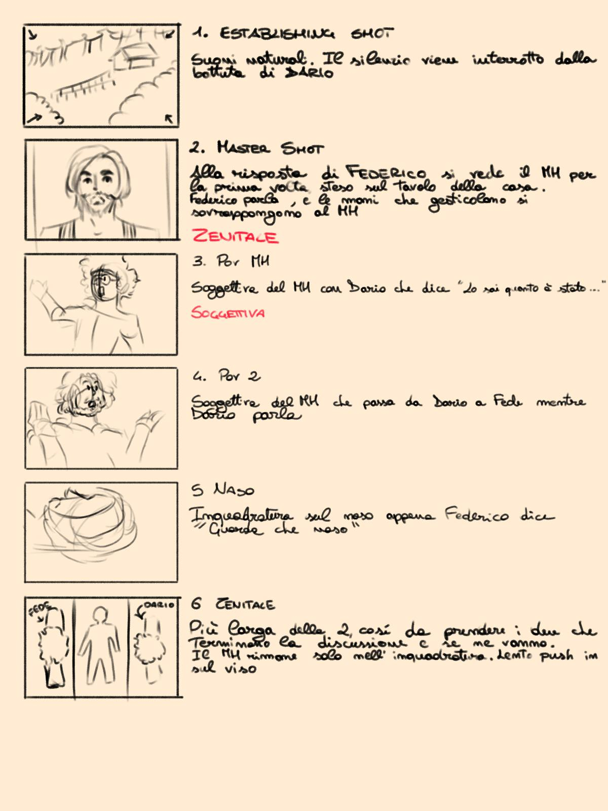
L’ambiente
Location creata per la prima consegna. Verrà riutilizzata invariata.
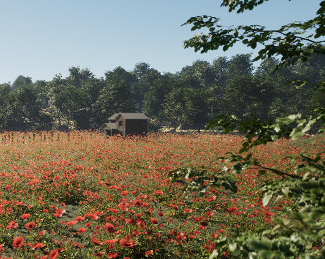
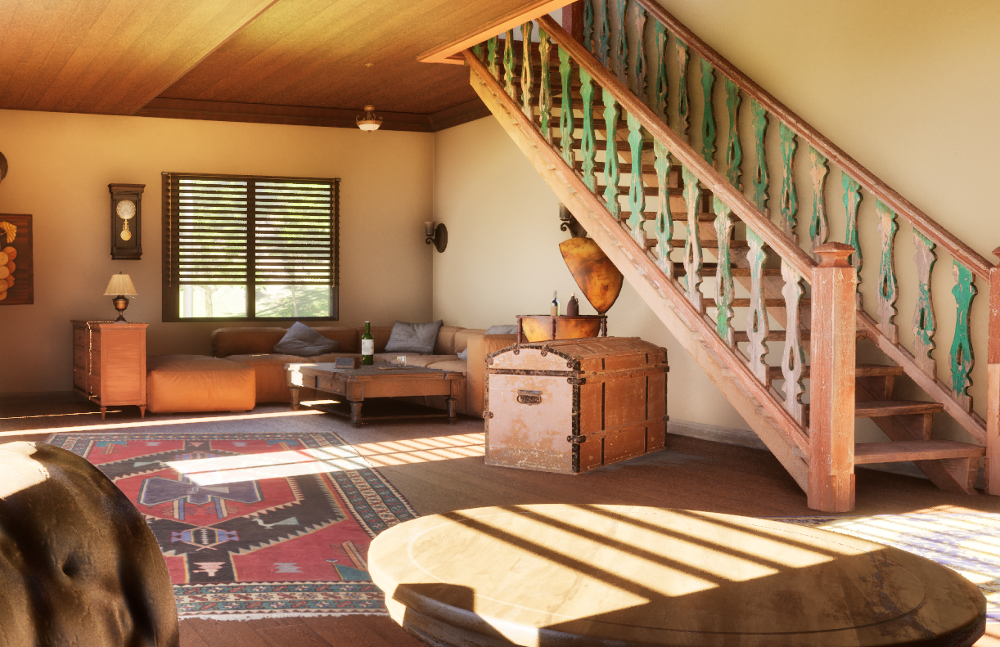
Struttura del Sequencer
Organizzazione multidipartimentale del lavoro tramite la gerarchia del Sequencer.
Workflow adottato: - MasterSequence: Per la gestione dei Camera Cuts e l’editing globale. - Camera cuts: Per l’isolamento e la lavorazione delle singole inquadrature. - SubSequence: Ognuno dei due MetaHuman presenta la propria sottosequenza così che i due persoanggi avessero animazioni autonome.
Body Mocap — Cartwheel
Valutazione strumenti IA per il mocap del corpo:
| Strumento | Pro | Contro |
|---|---|---|
| Cartwheel | Qualità output, workflow pulito | Solo 30’, ma arbitrari |
| Quickmagic | Qualità dell’output | Solo i primi 30’, sistema a crediti |
| RADiCAL | Qualità dell’output | Solo i primi 20’, sistema a crediti |
Abbiamo quindi optato per utilizzare Cartwheel
Body Mocap Grezzo (Dario) - Risultato
Ripresa con cellulare → Cartwheel → Trasposizione sulla mesh MHBody Mocap Grezzo (Federico)- Risultato
Ripresa con cellulare → Cartwheel → Trasposizione sulla mesh MHCorrezioni alle Animazioni — Additive Track
Il risultato grezzo di Cartwheel richiedeva correzioni manuale nel Sequencer.
Interventi:
- Posizione dita e mani
- Rotazione occhi
- Ancoraggio piedi a terra (entrambe le riprese zenitali)
Face Mocap — Live Link
Workflow:
Ripresa con cellulare → Live Link → Trasposizione sulla mesh MHLe Inquadrature — Camera Cuts e CineCamera
Cinque inquadrature principali, alternate tramite Camera Cuts in Unreal.
| # | Inquadratura | Focale | Motivazione |
|---|---|---|---|
| 1 | Totale sulla casa | 200mm | Taglio familiare e accogliente |
| 2 | Zenitale sul tavolo | 30mm | Ampia visione della scena |
| 3 | Su Dario | 30mm | Dialogo |
| 4 | Su Federico | 30mm | Dialogo |
| 5 | Dettaglio naso Gustave | 85mm | Close-up di qualità |
Sequenza delle camere: 1 → 2 → 3 → 4 → 5 → 2
Illuminazione
Setup a tre luci:
Key light Rect Light che potenzia la luce proveniente dalla finestra della casa
Fill light Ray tracing ambientale (fornito dall’ambiente e dall’engine)
Rim light Due Rect Light dietro ai personaggi — una per Federico, una per Dario
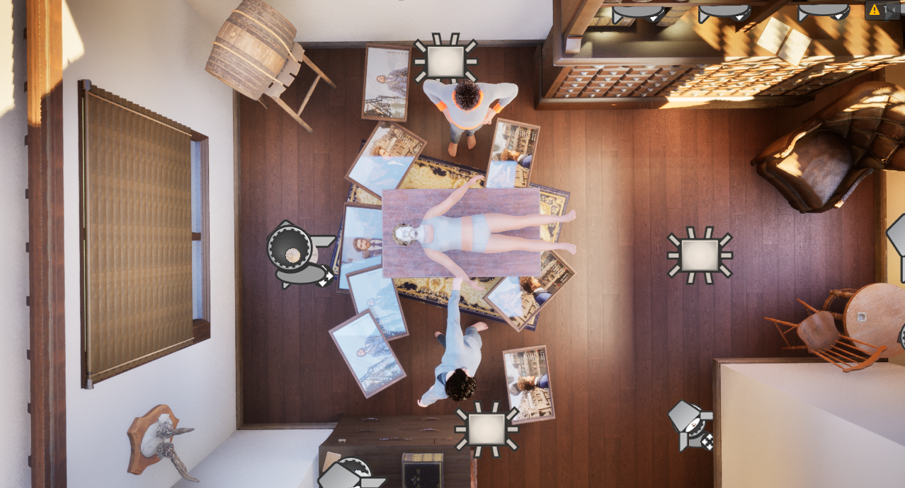
Risultato Finale
Lessons Learned — Post-Mortem
Cosa ha funzionato ✅
- MasterSequence: workflow non distruttivo e organizzato.
- Lighting SubSequence: iterazione luci indipendente dagli shot.
- CineCamera setup: focali azzeccate per il ritmo della gag.
- Additive Tracks: correzione efficace del mocap grezzo.
Criticità e Problemi ❌
- Mocap Sync: disallineamento temporale tra body e face capture da gestire.
- Foot Anchoring: scivolamenti residui nelle inquadrature zenitali.
Grazie per l’attenzione!
Federico & Dario